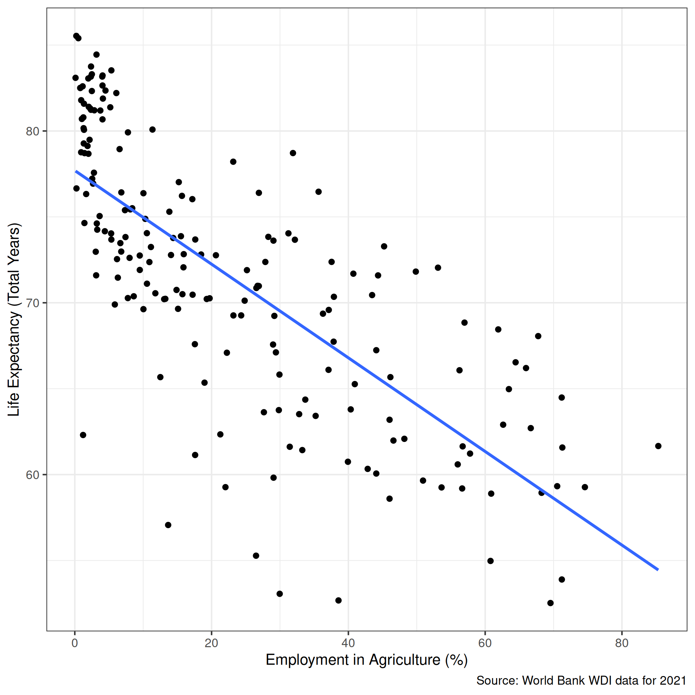

Regress presidential vote share (vote_share) on presidential approval rating (approval_june) using the datatset on Canvas
Fit the regression
Format the table
Make the residuals plot
Make a predictions plot
res1 <- lm(data = d, vote_share ~ approval_june)
modelsummary(list("Vote Share" = res1),
output = "gt", fmt = 2,
stars = c('*' = .05), gof_omit = "IC|Log|F",
coef_rename = c("approval_june"= "Approval in June (%)"))| Vote Share | |
|---|---|
| (Intercept) | 27.25* |
| (4.87) | |
| Approval in June (%) | 0.47* |
| (0.09) | |
| Num.Obs. | 12 |
| R2 | 0.716 |
| R2 Adj. | 0.688 |
| RMSE | 3.81 |
| * p < 0.05 | |